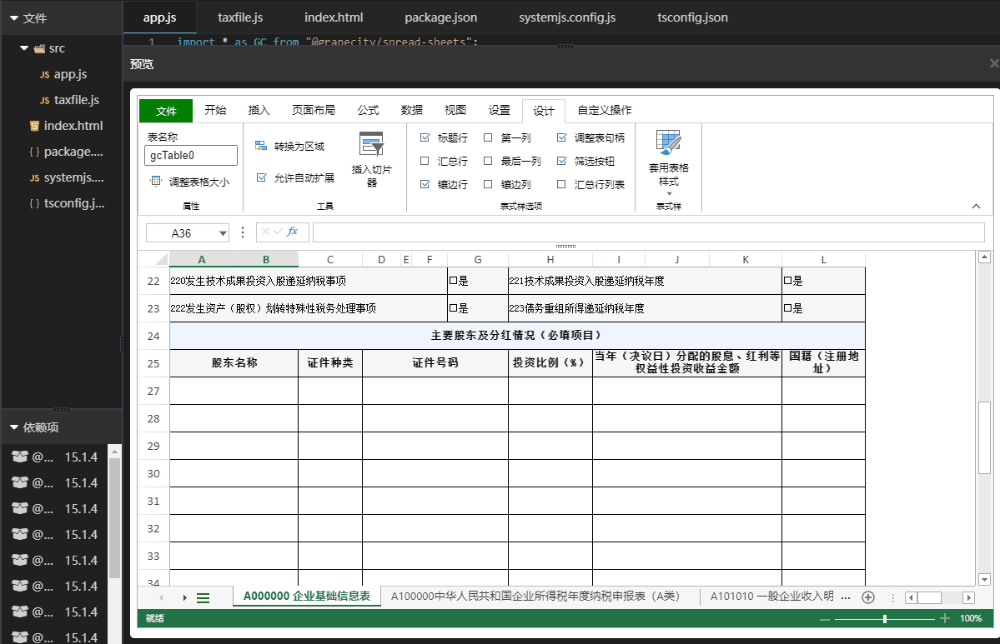
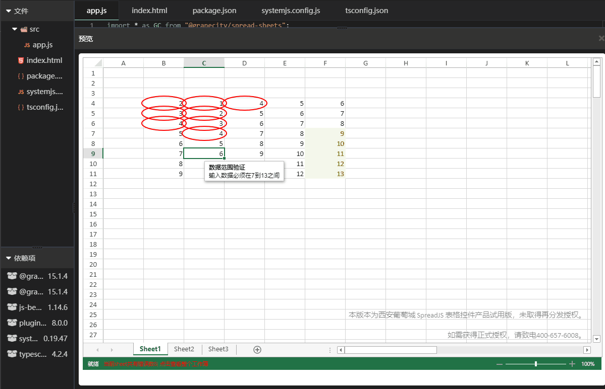
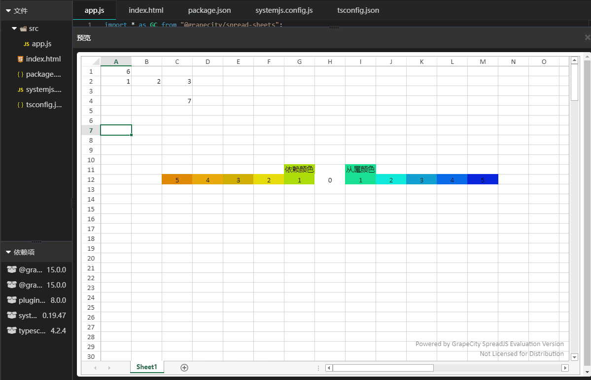
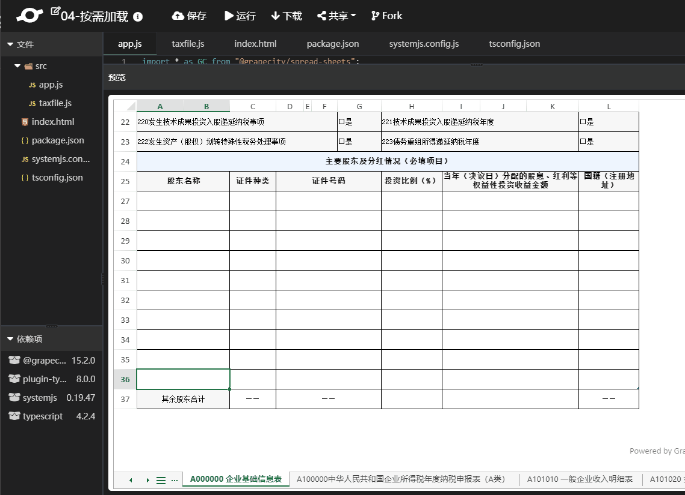
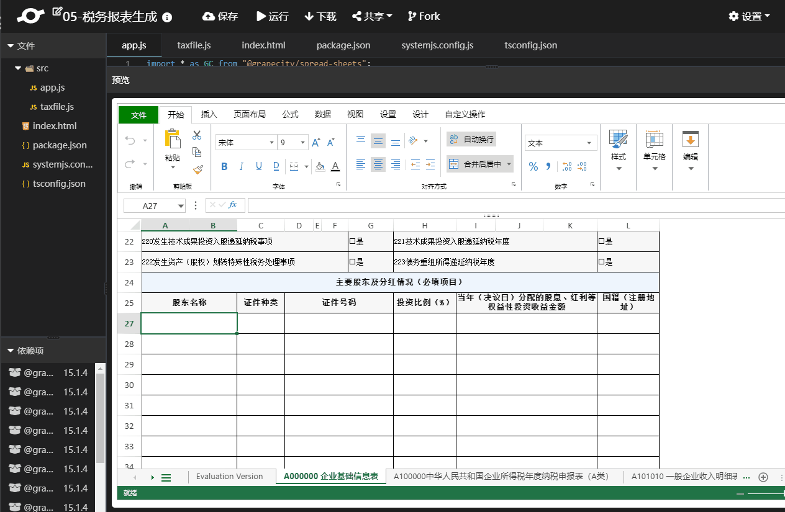

中国征税税种极为广泛，包括所得税（企业所得税和个人所得税）、间接税（增值税和消费税）、与房地产相关的税（土地增值税、房产税、耕地占用税和城镇土地使用税）和其它税种等。对于大部分个人来说，报税可能并不是十分繁杂。但对于企业来说，在不断演变的税收环境下，企业需要满足合规要求，减少税收风险，设计并实施最佳的税务优化方案。
Origin: https://www.grapecity.com.cn/blogs/spreadjs-scenarios-tax-filing-system
Official address: https://www.grapecity.com.cn/developer/spreadjs/industry/corporate-income-tax
大数据时代中，税务征管与时俱进，不同地区、不同行业每年优惠政策，报税模板文件都会有所调整。面对税收政策的变化以及企业业务发展，企业需要具备丰富的经验和睿智的远见，以做出最佳决策，实现税务目标。
要实现这一目标，需要有一支能深入理解最新税务法的内涵和实务规则的税务服务团队，而这一点是大部分企业都难以具备的。同时，使用传统企业所得税申报方式、历史数据的填写、数据校验及对比分析等都是复杂且容易出错的。而报税过程一旦出错，将会给企业带来巨大的问题。这使得税务职能部门愈发认识到技术提高效率、改善纳税流程及管理风险的重要性。
企业所得税申报与风险管控系统可以为企业构建高效且成本低廉的新方法以适应企业巨税务政策的发展和变化。结合科技力量及专业的税务团队和客户经验，企业所得税申报与风险管控系统将精简并自动处理年度企业所得税申报流程，使企业能够更好的管控税务数据，规避税务风险，提高企业报税效率。
企业所得税申报及管理系统业务流程：
- 数据采集：企业需提供相关的资料，例如营业执照正本及副本复印件、税务登记证正本及副本复印件、办公室租赁合同复印件、主管税务机构出具的企业所得 税税收优惠、当年应付职工工资清单
- 数据匹配、分析、清理：自动匹配后仍出现于待匹配科目列表中的条目需人工复核
- 自动计算及生成报表：工作底稿、企业所得税汇算清缴纳税填报表，纳税调整备忘录、税务分析报告
- 自动填报并提交：税务局客户端或网页申报表
- 数据追踪：税务局反馈录入系统，税务专业顾问及时跟进，讨论处理相关事宜
企业所得税申报及管理系统的优势：
- 自动高效：起始数据匹配在系统的支持和见一下一次性完成，一劳永逸，之后每年数据自动化匹
- 追朔数据：保留历年的财务数据，纳税调整信息及税务机关对于申报的反馈，实现可靠的电子化文档归集
- 降本有道：节约人力，自动生成工作底稿、所得税申报表（特殊事项需要人工补录）
- 风险预查：先税务局一部进行年度企业所得税汇算清缴数据分析，生成企业所得税相关税务风险分析（直观的税务指标）预警报告，了解公司的税务情况
上述内容介绍了企业所得税申报及管理系统的产生背景、业务流程以及优势。接下来，我们需要了解如何实现一个符合客户应用场景的税务申报系统。首先，大部分客户的历史数据都托管在Excel中。此外，税务申报表、报告表均以Excel形式来填写。因此，我们需要找到一个能在Web端实现类Excel操作的表格控件，使历史数据的提取展示，报表的生成能够完全迁移至Web端。如果该表格控件能兼具Excel的操作习惯，效果会更好，这样使用的业务人员就不需要任何培训成本，减少客户学习使用所需的时间。
本文借助葡萄城前端类Excel表格控件SpreadJS来提供解决方案，SpreadJS官方提供了在线体验地址，可以直接在官网测试是否满足操作行为、展示上的要求。选择SpreadJS的原因很多，但主要原因有以下几点：
- 操作行为高度类Excel，对Excel兼容度长期位于控件产品市场Top1
- 支持历史文件导入；提供数据绑定提取显示数据
- 商用产品，完善的技术文档，售前、售后支持及培训服务，使用无忧
- 前端控件，随项目做集成部署，数据安全可靠。
关于SpreadJS如何与自己的项目做集成，我们可以参考下列文章：
集成完成之后，就可以做一些报税系统中核心的业务场景，接下来会列举一些典型需求的实现方案。
数据集成
进行税务申报时，部分数据来源于数据库或历史Excel文件当中，例如公司信息，纳税编号，这些一般都是固化的信息，因此在申报时，我们可以采用绑定默认值的方式直接将这部分信息绑定在单元格中，在这里就需要借助SpreadJS中数据绑定的方式来填充这些固定信息，免除人工填写的过程，简化申报流程。对于本年度工资总额、收入总额等数据，可以通过公式计算而来，在这里就需要借助SpreadJS中公式函数的能力。SpreadJS中公式的使用方式于Excel中使用方式一致，兼容Excel中450种以上的公式函数，满足场景的公式应用需求。
示例演示：

数据验证
数据验证可以用来限制数据类型或用户输入单元格的值，强制填报人员按照规则填报工作表。在Excel中数据验证的使用方式可以参考将数据有效性应用于单元格，SpreadJS中UI行为添加数据验证与Excel一致，API层面可以参考数据验证与条件格式。
在税务申报系统中，用户在填写时，需要能实时显示并定位当前sheet中存在数据验证的单元格、通过验证的单元格数量、与未通过验证的单元格数量。税务申报时，当前可视区域并不一定能完全显示工作表中的所有数据验证，该功能可以快速定位不合法数据，降低税务申报的操作复杂度。
示例演示：

数据来源分析
税务申报表中，存在部分数据是通过其它单元格计算而来的，也就是公式函数，如果单元格公式依赖当前sheet中的单元格，则UI表现上是比较直观的。但在税务申报中，往往会存在跨工作表（sheet）的单元格引用关系，这时单靠SpreadJS默认提供的UI展示很难满足用户快速获得单元格引用关系的需求。对于此，我们可以借助SpreadJS中的公式追踪来实现依赖关系的直观展示。
示例演示：

按需加载
Web端Excel文件展示不及本地Excel文件的展示，Excel可以直接打开特别大的文件，但Web端不可以。因为Web端系统的运行环境依托于浏览器，以Chrome为例，64位操作系统的浏览器内存极限为1.4GB，因此并不是所有的大文件都可以直接在浏览器中直接打开展示。
对于一些大文件，我们可以采用在服务端对文件进行预处理，先解析当前文件中包含几个工作表，每个工作表中的公式函数是否依赖其它工作表。当然，在某种最坏的情况下，当前展示的工作表可能会依赖工作簿中的所有工作表，在这种情况下，这种按需分Sheet页加载就没有什么作用了。但是在税务申报计算时，一般是排在后边的表会依赖排在前边的工作表，我们可以先加载一些排在前边的工作表，后续通过sheet的切换来加载后续的表。
实现这一需求，需要配合服务端GCExcel。GCExcel是一款服务端处理Excel文件的控件，提供java及.net平台的资源包，对于大文件，可以提前在服务端做好文件的解析。
示例演示：

税务申报表生成
税务申报表的结果由多张工作底稿计算而来，但是实际向税务局提交时，并不需要工作底稿，只需要一张有计算结果的申报表即可。这就需要我们在提交时，删除工作底稿，并且只保留申报表中的计算结果。
SpreadJS提供了删除工作表及清除公式的相关API，使用这两个API就可以实现这一需求。
示例演示：
